Brand Manual · Versão Digital
Manual de marca da EAT+KITCHEN. Aqui está sintetizada nossa identidade visual: como a marca se mostra ao mundo, como ela fala, como ela se aplica em cada superfície de comunicação.
começar pela filosofia
Para nós, comida é transformação,
é cura. Sem sabores artificiais,
conservantes ou algo que você
não serviria para sua família.
Priorizamos produtores locais e insumos orgânicos, sempre que possível.
Quando nos alimentamos com comida de verdade, feita com ingredientes reais, tudo ao nosso redor é afetado de forma positiva.
O EAT+Kitchen nasceu da história dos irmãos Nico Ventre, Melina Ventre, Dami Ventre e da amiga Carolina Ribeiro, que têm a gastronomia como forma de amor presente em suas vidas desde a infância.
Juntos, decidiram criar um lugar onde comida é sinônimo de saúde, conforto e memórias, onde espaço é sinônimo de bem-vindo e as pessoas estão em primeiro lugar. Nosso processo de criação foi natural e verdadeiro, onde cada um contribuiu com suas experiências e sua essência. Construímos um lugar onde gostaríamos de estar.
A tríade
Essa nossa história, valores e vontades se mostram sintetizados e consolidados em nosso posicionamento verbal: Comida. Pessoas. Verdade.
Esse posicionamento é uma tríade e é também utilizado em diversas frentes como selo / chancela visual. É sugerido de tempos em tempos usá-lo em textura de carimbo (como ao lado).
Composição
O logotipo do EAT+Kitchen é composto por um lettering em caixa alta, sóbrio e funcional. O símbolo de somar (+) ao meio conta a história de profusão e positividade por trás da marca.
Tem 2 versões — uma linha e duas linhas — todas com mesmo peso e importância. A escolha pela utilização das mesmas se dá pela leitura da peça: horizontal, vertical, repleta de espaço ou com pouco espaço disponível.
Princípios
Versões
Duas versões — linha única e duas linhas — todas com o mesmo peso e importância. A escolha entre elas se dá pela leitura da peça (horizontal, vertical, com mais ou menos espaço).
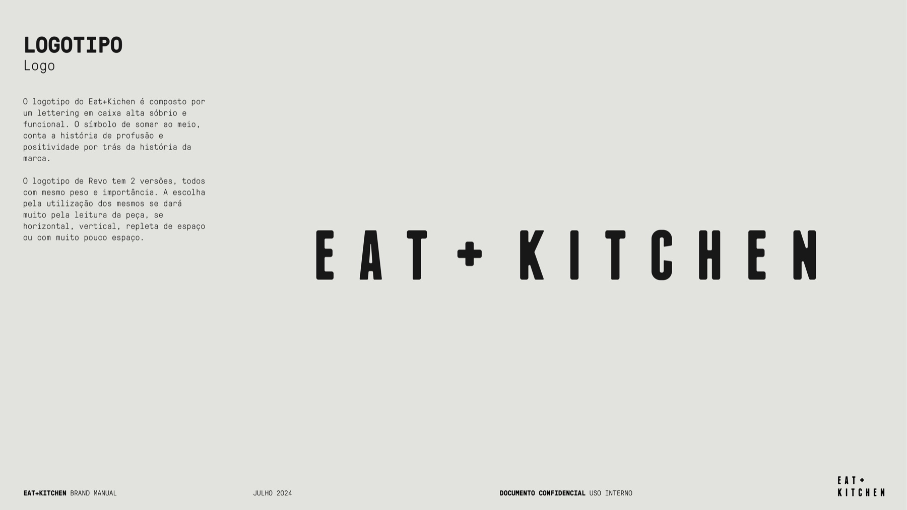
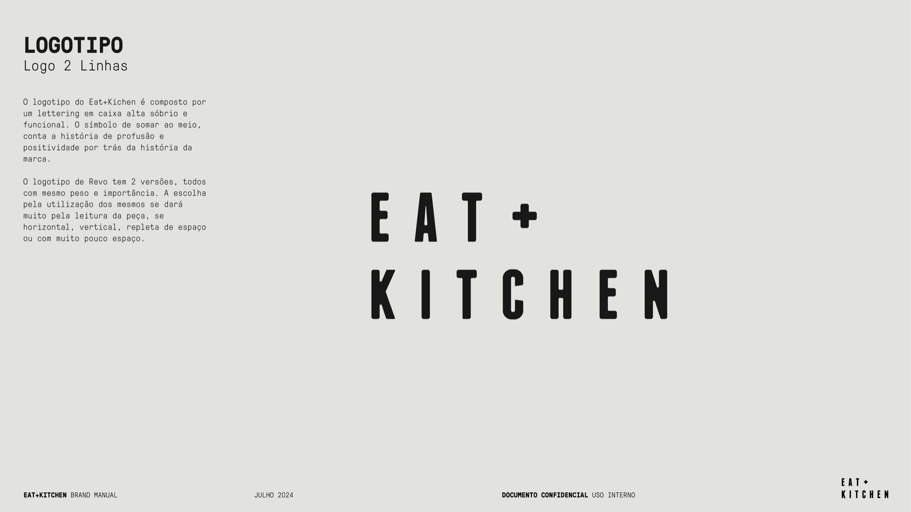
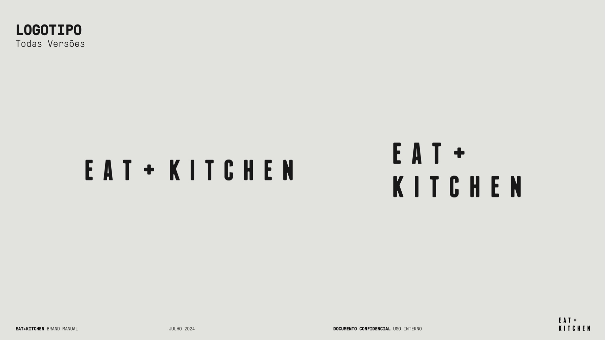
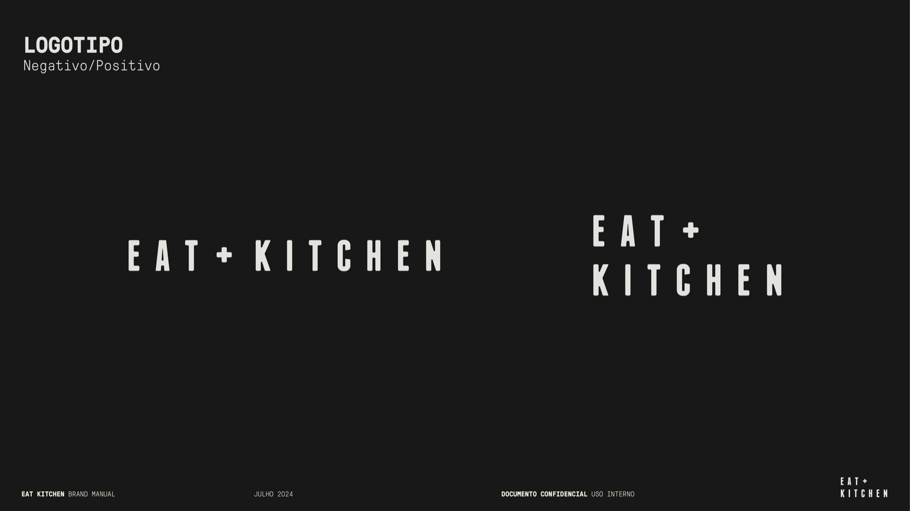
Área de Segurança
O logotipo deve ser resguardado em relação a outros grafismos e elementos de terceiros. A área de segurança é igual à altura e largura do símbolo "+" usado no logo, replicado em cada um dos 4 cantos.
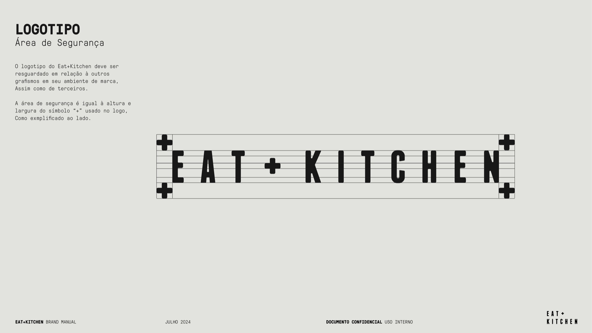
Reduções Mínimas
Para garantir leitura apropriada: linha única → mínimo 170 px / 4,4 cm de largura. Duas linhas → mínimo 100 px / 2,6 cm de largura.
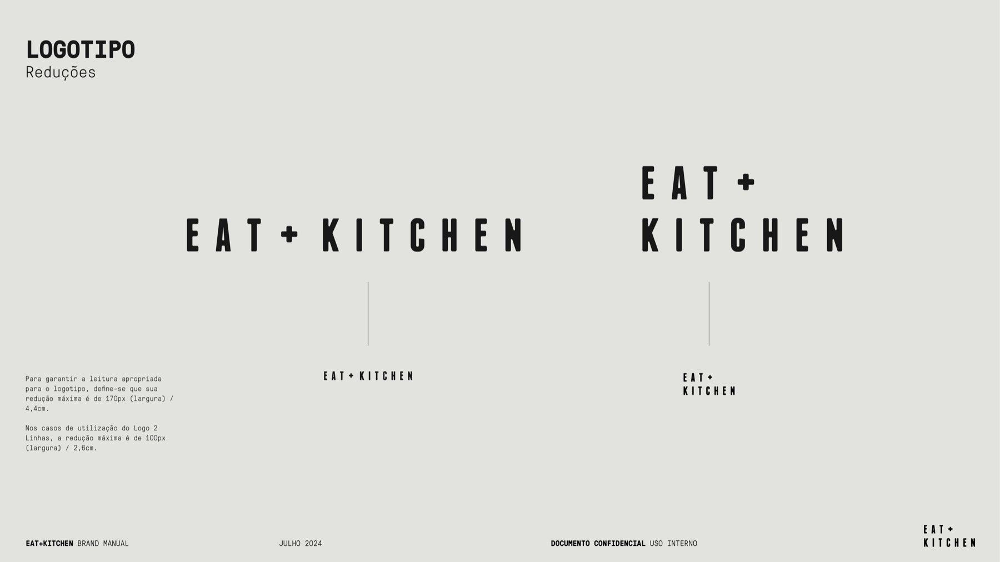
Usos Incorretos
Oito violações que nunca devem ocorrer com a logotipia — alterações de posicionamento, cor, ângulo, dimensão, contorno ou centralização indevida.
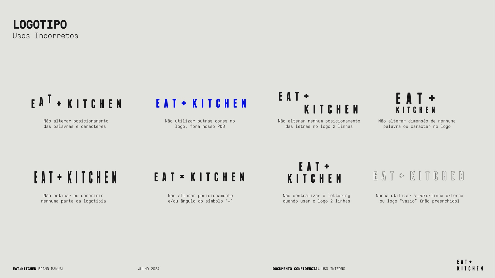
A tipografia base é a GT Pressura em 2 estilos com utilização de 3 pesos.
Para títulos importantes em comunicação, usamos a GT Pressura Bold, com espaçamento aberto de 120 pts como vemos em "NOVIDADES".
Para todos outros textos, em espaços menores ou cardápios, usamos a GT Pressura Mono nos pesos Bold e Light, com espaçamento normal.
GT Pressura é inspirada na impressão de fontes de metal, bem como em letras projetadas estampadas em caixas de entrega. Ela usa o gesto visual de tinta se espalhando sob pressão como dispositivo estilístico, oferecendo uma alternativa às fontes mais esguias da era digital.
Foundry: Grilli Type · Lic. necessária para uso comercial.
Type Kit
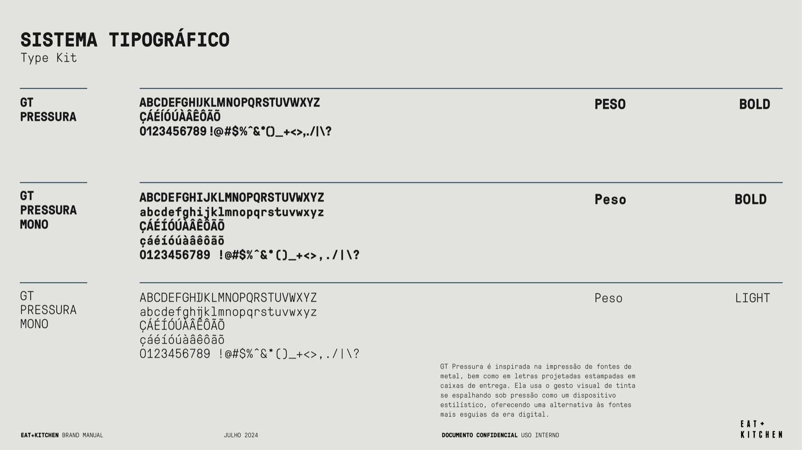
Usos Gerais
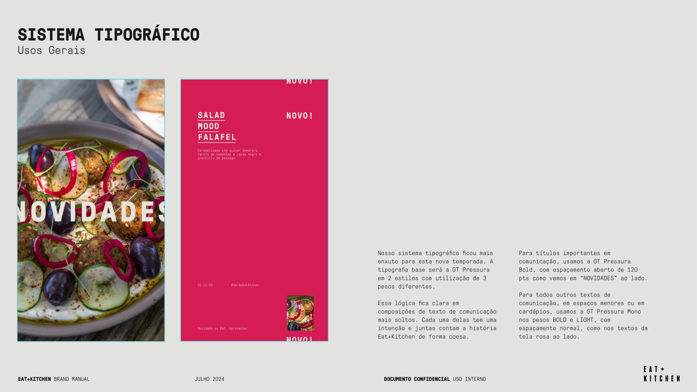
Institucional Base
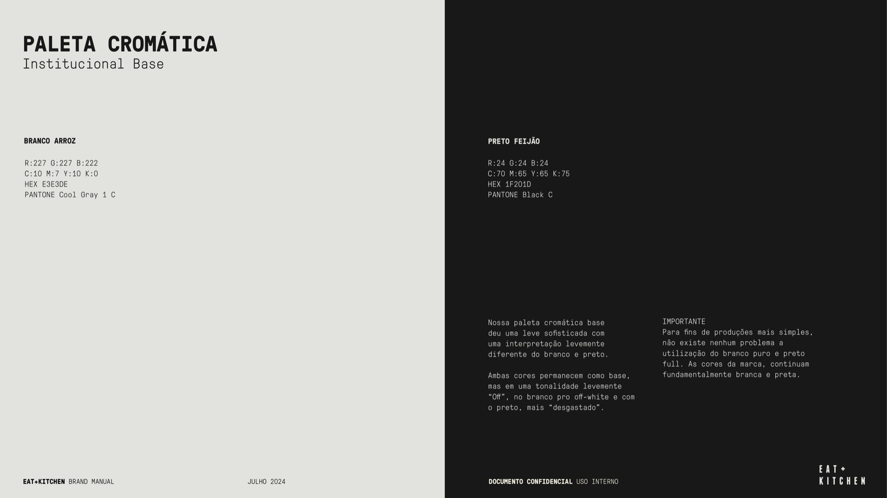
Cores & Sabores · Digital
Em materiais de comunicação digital — menus QR code, peças de mídia social — sugerimos a utilização de cores para fundos de layout. Essas peças coloridas só podem ser usadas acompanhando fotos / vídeos de comida ou de pessoas.
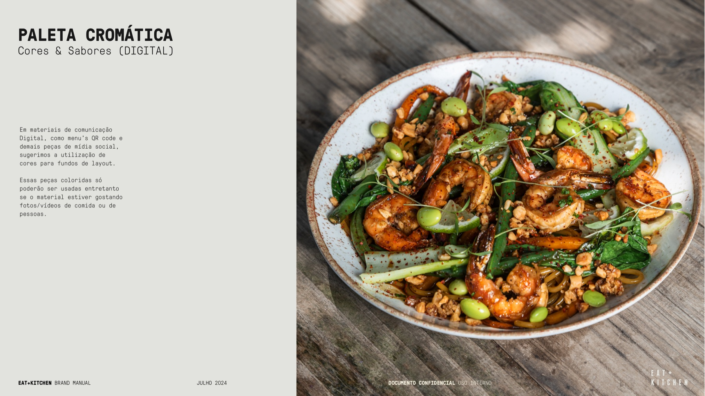
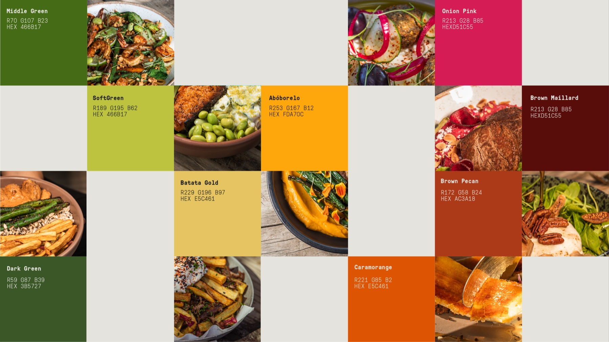
Códigos HEX (clique para copiar)
Os cardápios reúnem a expressão completa do sistema da marca em uma só superfície: logo no topo, selo de tríade à direita, tipografia mono em pesos Bold e Light para a hierarquia dos pratos, e a paleta institucional preto-em-branco como base. Existe uma linha principal (família) e versões sazonais ou especiais (winter menu, bebidas).
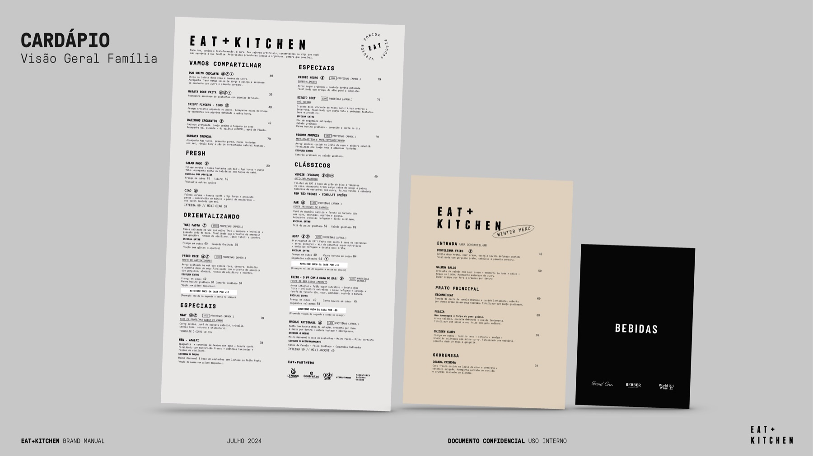
Três pilares orientam como a EAT+KITCHEN fala — em legendas, cardápios, atendimento, copy de campanha, nas placas físicas das lojas. Quando estiver em dúvida, leia em voz alta: precisa soar simples, verdadeiro e otimista.
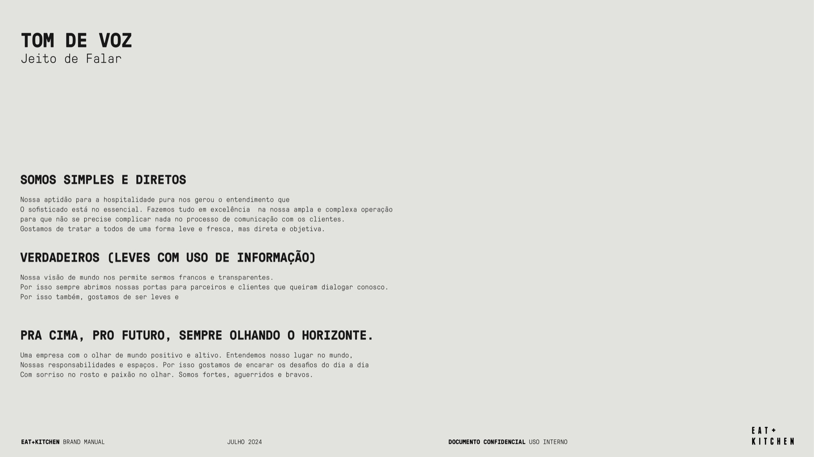
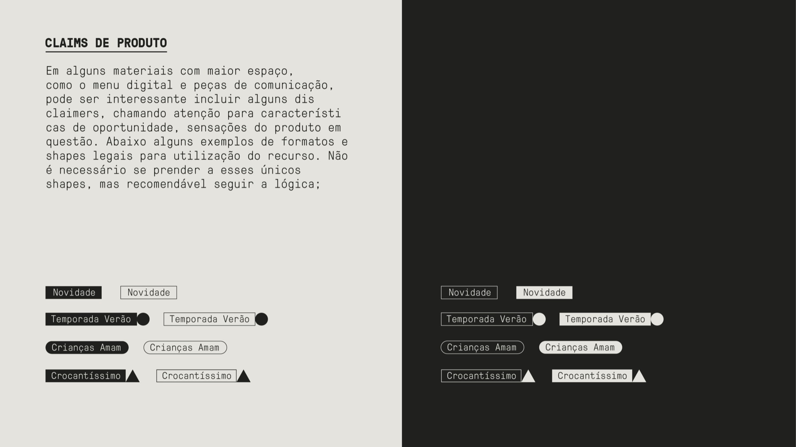